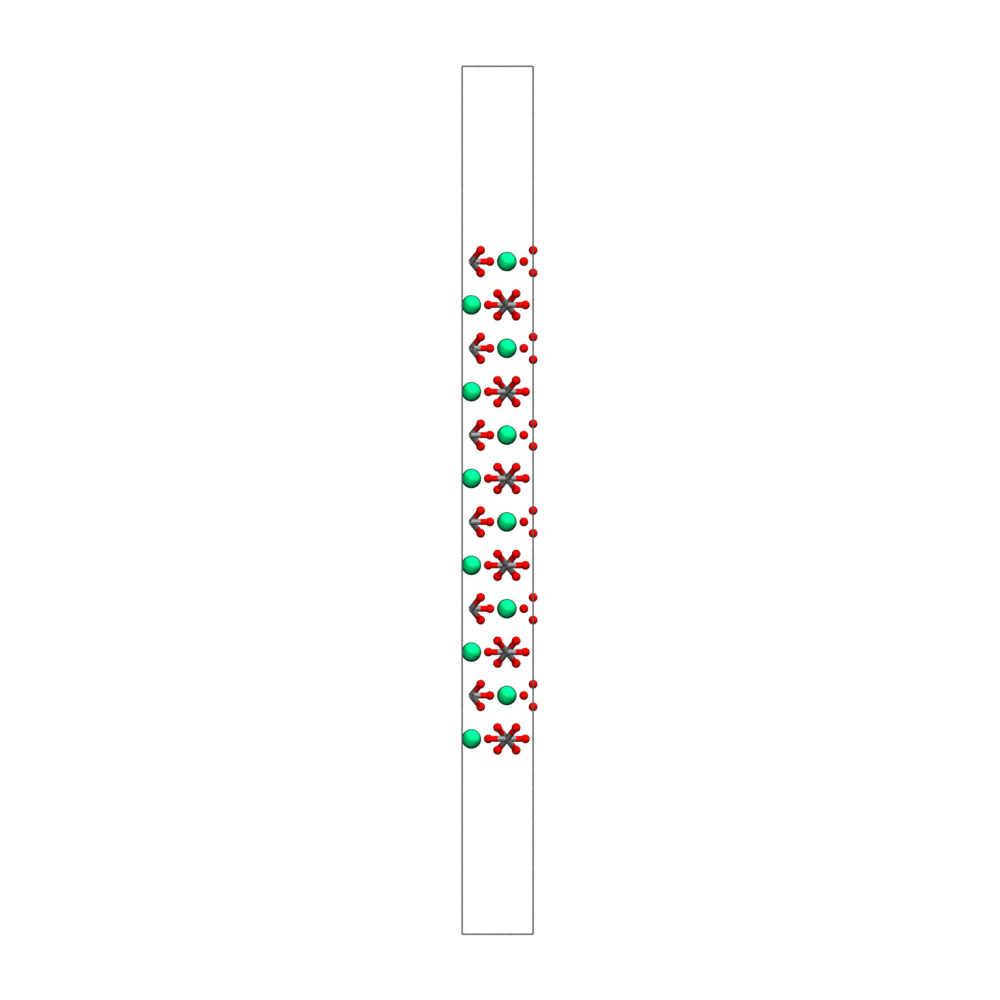
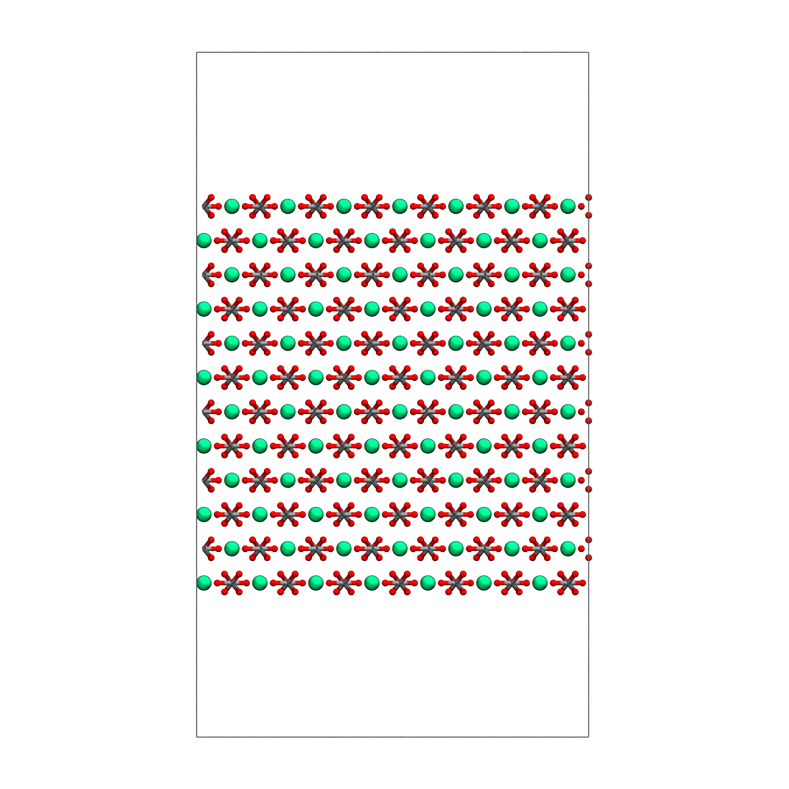

Tutorial: Building a Calcite (\(10\overline{1}4\)) Surface Slab from COD#
This tutorial demonstrates how to build a surface slab from a crystal structure retrieved from the Crystallography Open Database (COD) using CEMD.
Prerequisites#
import numpy as np
from cemd import AtomicSystem
from cemd.builders import SurfaceBuilder
Step 1: Retrieve Calcite Structure from COD#
Download the calcite structure (COD ID: 9016705) directly from the COD database:
# Retrieve calcite structure from COD
system = AtomicSystem.from_cod()
? Search by: (Use arrow keys)
Mineral Name
Chemical Formula
» COD ID
Note
You can also find a calcite structure searching by mineral name.
? Search by: COD ID
? Enter your query: 9016705
print(system)
<AtomicSystem with 30 atoms>
Box
a (Å) b (Å) c (Å) α (°) β (°) γ (°)
4.98 4.98 17.19 90.00 90.00 120.00
Atoms
type number % mass charge
C 6 20.00 12.01078 4.0
Ca 6 20.00 40.07840 2.0
O 18 60.00 15.99943 -2.0
Total charge: 0.000e
Volume: 0.37 nm3
Density: 2.70 g/cm3
Step 2: Inspect the Crystal Structure#
Check the crystal structure details before generating the surface:
# Create a surface builder to inspect the structure
builder = SurfaceBuilder(system)
print(builder)
Expected output:
<SurfaceBuilder>
┌─ Structure
│ sites: 30
│ lattice: a=4.98 b=4.98 c=17.19 Å
│ α=90.0 β=90.0 γ=120.0 °
│ ordered: ✓
Step 3: Generate the (\(10\overline{1}4\)) Surface Slab#
Calcite is commonly studied with the (\(10\overline{1}4\)) surface. Generate the surface slab:
# Generate (10-14) surface slab
surfaces, shifts, dipoles, broken = builder.build(
miller_indices=(1, 0, 4), # Calcite (10-14) surface
min_slab_size=25.0, # Minimum slab thickness in Å
min_vacuum_size=15.0, # Minimum vacuum gap in Å
max_broken_bonds=10, # Maximum allowed broken bonds
)
# Select the best surface (lowest dipole moment)
best_idx = np.argmin(dipoles)
slab = surfaces[best_idx]
print(f"Selected surface {best_idx+1} with dipole: {dipoles[best_idx]:.3f} D")
You can also use the explore method:
builder.explore()
? Enter Miller indices (h k l): 1 0 4
? Min slab size (Å): 25.0
? Min vacuum size (Å): 15.0
✓ Generated 1 surfaces with 0 broken bonds
↑↓ Move [Enter] Select [q] Quit
# | Shift | Dipole (D) | N atoms
---------------------------------------------
➜ 1 | 0.1250 | 0.0000 | 360
Step 4: Examine the Generated Surface#
Inspect the generated surface slab:
print(slab)
Expected output:
<AtomicSystem with 360 atoms>
Box
a (Å) b (Å) c (Å) α (°) β (°) γ (°)
4.98 24.36 60.89 90.00 90.00 90.00
Atoms
type number % mass charge
C 72 20.00 12.01078 4.0
Ca 72 20.00 40.07840 2.0
O 216 60.00 15.99943 -2.0
Total charge: 0.000e
Volume: 7.38 nm3
Density: 1.62 g/cm3
Note
The slab box is now orthogonal (all angles 90°) because the surface generation process automatically orthogonalizes the surface plane with the get_orthogonal_c_slab().
Step 5: Visualize the Surface#
Visualize the generated surface using VMD:
# Visualize the surface
slab.view(material="AOEdgy", resolution=12)
{kind=link}

Step 6: Extend the slab and write#
slab.replicate([7,1,1])
slab.view()
slab.write("calcite_104.data")
{kind=link}
